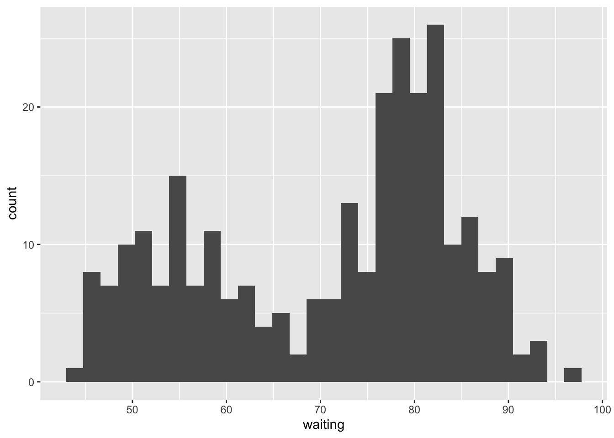
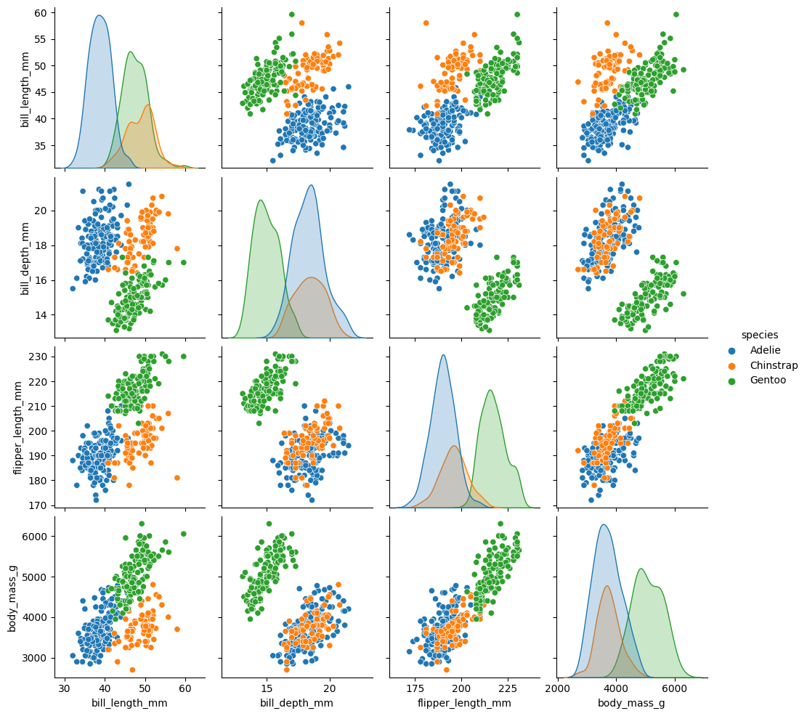

library(tidyverse)Exploring quarto
Baby steps into the quartoverse
Getting started
First, let’s create a new project and note some interesting differences (from .Rmd-verse).
- Restart RStudio
- New Project > New Quarto Project
- Note: the type of project that gets created
- Note: the document extension
- Note: Render button(instead of Knit)
- Go ahead & render the .qmd!
Add a new R code chunk
Now let’s write some code in our .qmd & see what’s different. If we’re working in RStudio, the shortcut to add an R code chunk in a .qmd is the same (and default expected language is R).
- Insert a new code chunk
- Attach the
tidyversepackage
Code chunk options - the hashpipe
We may want to hide some code chunk options. We can use the “hashpipe” #| to set code chunk options. For example, in the code chunk we just wrote, let’s add the following:
#| warning: false#| message: false
The other code chunk options we use (e.g. echo, include, eval) work similarly. Feel free to try them out!
Global options
Update global options for code chunk execution in the front matter (up in the .qmd where the title:) is. That’ll look something like this:
---
title: "Exploring quarto"
execution:
warning: false
message: false
---See more on execution options here: https://quarto.org/docs/computations/execution-options.html
Outputs
So things seem pretty similar to .Rmd so far. Let’s keep going with a little graph, then render.
ggplot(data = mtcars, aes(x = wt, y = mpg)) +
geom_point()
No surprises there! So what’s new?
We can set options for outputs globally or within individual chunks (start figure labels with fig-…we’ll see why in a bit.
ggplot(data = faithful, aes(x = waiting)) +
geom_histogram()
But also you can just work in other languages:
import seaborn as sns
df = sns.load_dataset("penguins")
sns.pairplot(df, hue = "species")
You can set code chunk execution options in Python (or other language) chunks the same way (using the hashpipe #|).
Some sugar
- Check out the formatting when you add
author: "Name"anddate: "XXXX-XX-XX"to the front matter…pretty nice auto-formatting! - Cross-referencing (of figures and more!):
See Figure 1 for a cool histogram.
- Learn more! Quarto guide